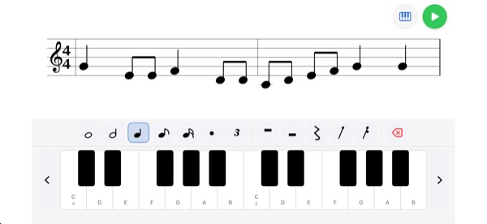
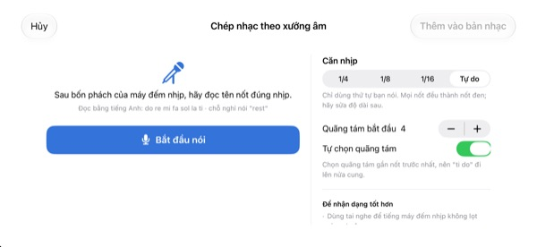
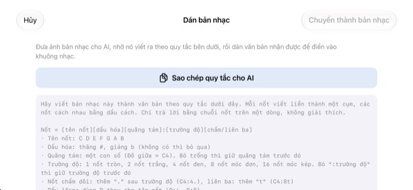

Đừng đếm trong đầu nữa,
hãy nghe thử
Chép hai ô nhịp khiến bạn lúng túng lên khuông rồi bấm phát. Sau một ô nhịp đếm vào, ứng dụng chơi đúng nhịp, đúng cao độ theo máy đếm nhịp.
Mọi tính năng đều miễn phí. Dành cho iPhone và iPad.

Viết vài nốt và nghe thử
Nhấn giữ khuông nhạc, kéo lên xuống để đổi nốt, nhấc tay để đặt nốt. Bấm phát để nghe sau một ô nhịp đếm vào. Có âm thanh, hãy kiểm tra âm lượng.
Đếm phách mãi rồi lại rối?
Móc đơn chấm dôi, rồi móc kép, ngay sau đó là chùm ba. Gõ tay đếm một lúc là lệch lúc nào không hay. Tối trước buổi tập hợp xướng, bên cạnh thường cũng chẳng có cây đàn nào. Với StaffSinger, chỉ cần chép hai ô nhịp đó lên khuông là nghe được đúng nhịp, đúng cao độ.
Nghe đúng nhịp, đúng cao độ
Sau một ô nhịp đếm vào, bản nhạc chạy theo tiếng gõ của máy đếm nhịp và nốt đang vang được tô màu cam. Chỉnh tốc độ từ 40 đến 200 BPM và chọn nhịp 4/4, 3/4, 2/4, 6/8, 2/2 hoặc 3/8.
Đặt chồng nốt trên cùng một phách để tạo hợp âm vang cùng lúc, và viết tách tối đa ba bè. Có cả khóa Sol, khóa Đô (alto), khóa Fa và hóa biểu.

Đọc tên nốt, thành nốt nhạc
Sau bốn tiếng đếm của máy đếm nhịp, đọc do re mi theo phách là nốt hiện lên khuông. Đọc đúng phách thì trường độ cũng được ghi theo nốt đen, móc đơn hoặc móc kép. Chỗ nghỉ thì nói rest.
Hãy đọc tên nốt theo cách phát âm tiếng Anh. Giọng nói chỉ được nhận dạng trên máy và không được lưu lại.

Ảnh bản nhạc cho AI, kết quả thì dán vào
Chạm Sao chép quy tắc cho AI, gửi cho AI kèm ảnh bản nhạc, rồi dán đoạn chữ nhận được vào. Khuông nhạc sẽ tự điền. Định dạng xem ở bảng bên dưới.
Bạn cũng có thể chụp bản nhạc giấy, để trên màn hình rồi vừa nhìn vừa chép.

Bắt đầu chỉ với ba bước
- 1
Chọn ô nhịp khó
Mở ứng dụng là có sẵn khuông trống hai ô nhịp.
- 2
Viết nốt
Nhấn lên khuông hoặc chơi trên bàn phím piano.
- 3
Bấm phát
Đếm vào rồi phát theo máy đếm nhịp.
Định dạng khi dán chữ
- C4:4
- Nốt C ở quãng tám 4, nốt đen (Đô giữa là C4)
- D:8
- Bỏ quãng tám thì dùng tiếp quãng tám trước đó
- F#4:8 · Bb4:4
- # là thăng, b là giáng
- E4
- Bỏ :trường độ thì dùng tiếp trường độ trước đó
- :1 · :2 · :4 · :8 · :16
- nốt tròn, trắng, đen, móc đơn, móc kép
- C4:4.
- nốt chấm dôi
- C4:8t
- chùm ba
- R:4 · R:8
- dấu lặng
Chạm Sao chép quy tắc cho AI trong ứng dụng để sao chép nguyên phần hướng dẫn này. Các nốt cách nhau bằng dấu cách.
Mọi tính năng đều miễn phí
Miễn phí
- Viết trên khuông và bàn phím piano hai quãng tám
- Phát kèm đếm vào và máy đếm nhịp
- Hợp âm và ba bè
- Hóa biểu và ba loại khóa nhạc
- Đọc tên nốt bằng giọng nói
- Dán chữ và ảnh tham khảo
Ủng hộ nhà phát triển
- Gửi một khoản tip nhỏ trong Cài đặt
- Gửi tip không mở thêm tính năng nào
Không phải gói đăng ký. Mỗi lần gửi là một lần thanh toán.
Không quảng cáo, không cần tạo tài khoản.
Câu hỏi thường gặp
Thêm nốt bằng cách nào?
Chọn trường độ trên thanh công cụ trước, rồi nhấn vào khuông ở cao độ bạn muốn. Khi giữ tay bạn sẽ nghe nốt đó, nhấc tay là nốt được thêm. Chạm nút bàn phím để nhập bằng bàn phím piano hai quãng tám.
Tạo hợp âm thế nào?
Bật nút Hợp âm trên thanh công cụ rồi thêm nốt. Nốt mới sẽ chồng lên nốt đang chọn và vang cùng lúc.
Muốn sửa nốt đã viết?
Kéo nốt lên xuống để đổi cao độ, kéo ngang để dời sang phách khác. Khi đã chọn nốt, nút ♯ ♭ dời nửa cung, nút 8va dời một quãng tám.
Đổi tốc độ và số chỉ nhịp ở đâu?
Trong Cài đặt, cùng với khóa nhạc và hóa biểu. Bật tắt máy đếm nhịp và phần đếm vào cũng ở đây.
Không nghe thấy tiếng.
Kiểm tra chế độ im lặng và âm lượng phương tiện. Nếu chỉ không nghe máy đếm nhịp, hãy xem mục Hỗ trợ phát nhạc trong Cài đặt đã bật máy đếm nhịp chưa.
Đọc tên nốt hay bị sai.
Dùng tai nghe để tiếng máy đếm nhịp không lọt vào micro, và đọc rõ từng nốt, đúng phách. Nốt nào sai thì kéo để sửa.
Vì sao cần camera?
Chỉ để chụp bản nhạc giấy làm ảnh tham khảo trên màn hình. Ảnh không rời khỏi máy. Không cho phép camera thì vẫn chọn ảnh từ thư viện được.
Dùng được trên thiết bị nào?
iPhone và iPad chạy iOS 17 trở lên. Giao diện thiết kế cho màn hình ngang.
Bản nhạc hay giọng nói của tôi có bị gửi đi đâu không?
Không. Bản nhạc, ảnh và giọng nói đều nằm trên máy, và ứng dụng chạy được khi không có mạng. Chỉ có thống kê sử dụng ẩn danh và báo cáo sự cố được gửi lên iCloud để cải thiện ứng dụng.
Liên hệ thế nào?
Gửi email tới leeo@kakao.com, thường sẽ có phản hồi trong 2 đến 3 ngày làm việc. Báo lỗi và đề xuất tính năng cũng có thể gửi qua GitHub tại M1zz/StaffSinger.
Có câu hỏi hay góp ý? Hãy viết tới leeo@kakao.com.